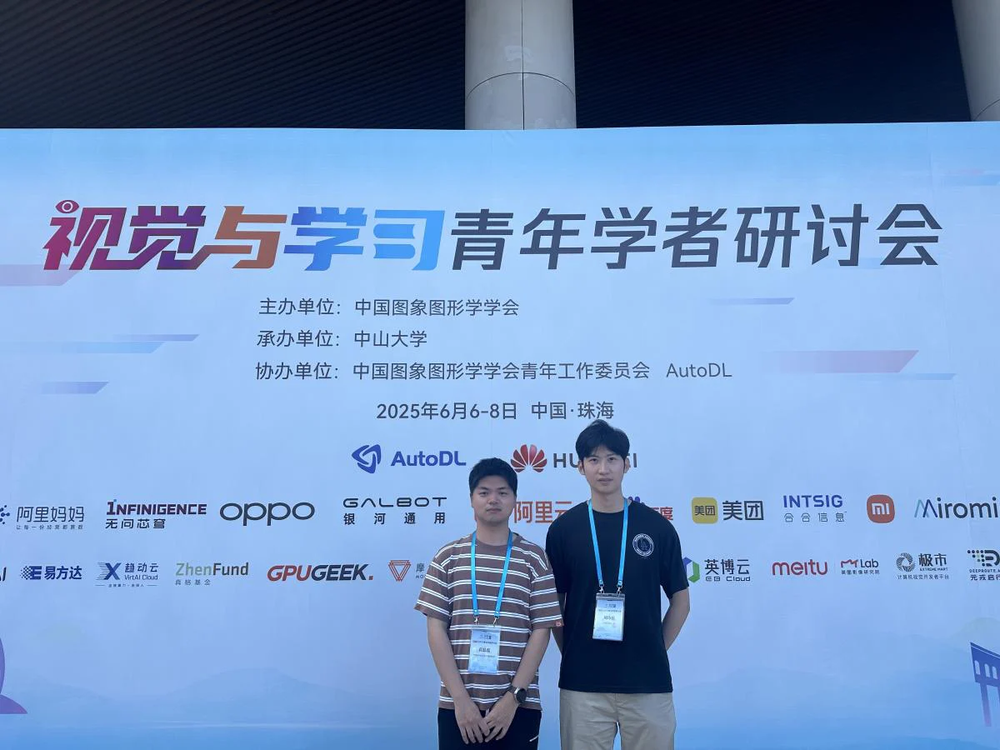
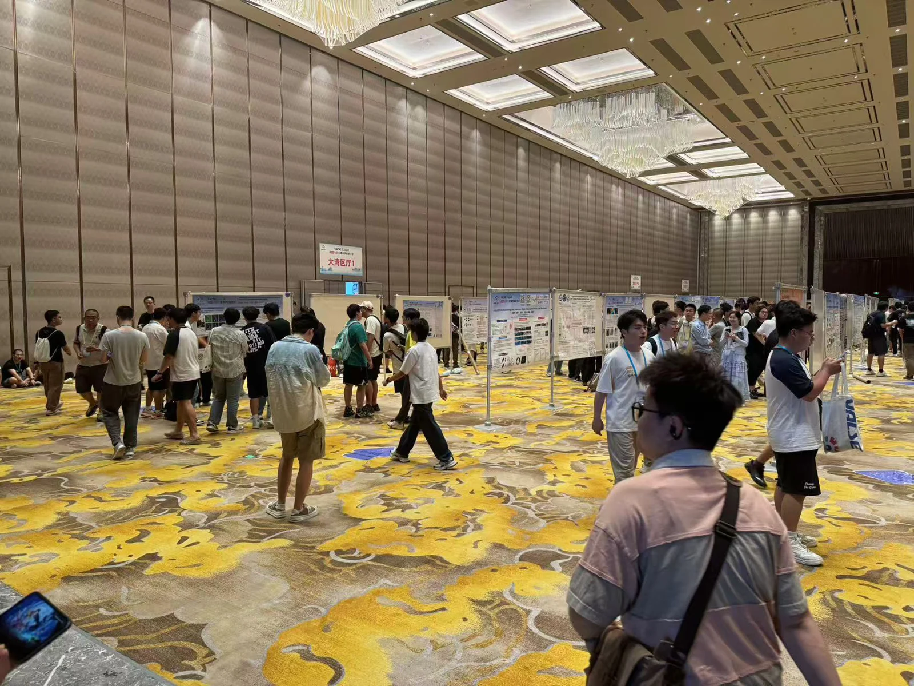

2025年6月6日至8日，视觉与学习领域的顶级学术盛会VALSE2025在珠海成功举办。本次大会以“视觉智能与大模型时代的融合发展”为核心议题，汇聚了来自国内外的学术领军人物与产业专家。iMED宁波团队成员周诗佳、袁磊磊参会，围绕会议热点议题深入交流，并结合自身课题研究开展思维拓展与技术对接。

会议首日（6月6日）以大会主旨报告为主，专家们围绕大模型、生成视觉、多模态认知等领域分享了最新成果与未来方向。我们重点聆听了华中科技大学自翔教授关于“边向通用文字识别的技术演进”、南京大学俞扬教授关于“大模型背景下的强化学习”、以及西安交大孟德宇教授关于“机器学习的稳态与变动”的报告。这些报告让我们更加清晰地认识到当前AI视觉系统正从任务驱动迈向通用智能的趋势，对我们课题组探索医疗影像问题具有重要启示。
第二日（6月7日）上午，我们重点参与了Workshop 12：AI4Science - 走向突破的思维，该论坛由欧阳万里、周浩、周东展等知名学者主持，分享内容覆盖从AI赋能自然科学研究到大模型结构的科学原理建构。下午，我们参与了Workshop 2：多模态学习助力智慧医疗：从科研到落地，聚焦如何将多模态学习（图像、文本、生物信号）与智慧医疗场景深度融合，对我们未来研究中将多模态眼底影像数据进行联动分析提供了方法参考。随后，团队成员分别参与Poster 展区自由交流，与来自上交、北航、浙大等高校的学者深入探讨，交流效果显著。

第三日（6月8日）上午，我们参与了Workshop 6：视觉通用模型，听取了王兴刚、董超等学者对当前“预训练+微调”范式的实战经验与优化路径分享。报告内容聚焦于模型压缩、多任务适配及工业部署，对我们后续模型部署在边缘设备上的可行性提升极具参考意义。
通过为期三天的深入参会，我们不仅拓宽了科研视野，更从实际交流中明确了角膜影像方向下的研究切口与突破路径。本次会议也是一次重新评估我们现有模型结构与方法体系的机会，在“大模型+医疗AI”的背景下，我们将继续深化跨模态融合与模型泛化能力研究，积极对接国家战略需求。
编辑： 周诗佳